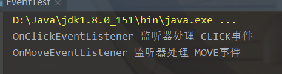
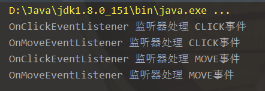

在看logback源码的时候看见了ILoggingEvent，引发我学习一波事件监听器的知识
事件监听模式的大致流程如下
概念说明
如果我们界面上有一个按钮，那么我们的鼠标能够对这个按钮做什么？
无非就是：单击按钮、双击按钮、移动按钮、滑过按钮之类的；
那么现在我想做：
- 当单击按钮时，使按钮变绿；
- 当移动按钮时，使按钮变红；
双击按钮和滑过按钮没有任何变化；
那么我们可以认为：单击按钮、双击按钮、移动按钮、滑过按钮是四个鼠标相关的事件；
当事件发生时，我们就需要做相应的操作，这个工作由事件监听器完成【与其说是一个监听器，还不如说是执行操作的而已】
既然事件监听器只是一个执行者，那么就必须要有事件分配者，用来分配事件给监听器，就是事件源；
一般来说我们可以把鼠标的所有事件归属于同一个事件源，由该事件源调度监听器处理；
鼠标事件源能够调度的监听器只有鼠标操作相关的（单击按钮事件监听器、移动按钮事件监听器）而不可能调度到键盘敲击事件监听器；
疑难杂症
怎么才能让事件源只调度到鼠标操作相关的监听器呢？
监听器的注册：把监听器注册到事件源去，事件源只能获取到注册了的监听器（其实就是添加到一个Vector变量里面去）
【当然如果你把键盘的监听器注册给了鼠标事件源，就GG了】
所有鼠标事件用一个监听器处理不好吗？
当然是可以的，监听器里面使用 if-else这样的条件判断语句来处理按钮到底是变成什么颜色；
但是不这么做，就跟工厂模式一样的道理，不利于拓展和维护：
如果我要增加一个双击事件的处理，我只需要新建一个监听器然后注册到对应的事件源；
一旦事件发生，事件源会通知所有监听器，又要处理的可以处理事件了。
使用if-else也可以这样，但是每次都要修改代码，而不是增加代码（特别多人协作的时候修改代码可能冲突，也不符合设计思想，看着一大堆代码，人都不好了）
示例
先用枚举列出了可能的鼠标事件名称：

规定事件（其实可以直接继承java.util.EvenObject类实现事件类，不继承也可以，所以自己试了一下）

然后创建监听器的接口规范

很多代码写时候继承了java.util.EventListener：
1 | package follow.event.listeners; |
然后来个具体的单击事件处理用监听器（移动事件其实内容写的差不多，就不列出了）
这里只是说明，增加一个监听器都需要实现规范的监听接口而已
1 | package follow.event.listeners; |
事件源需要一个Vector类放监听器
1 | package follow.event; |
测试
1 | public class EventTest { |
结果：专款事件专款监听器处理

如果我们把监听器的判断条件去掉
1 | package follow.event.listeners; |
结果相当的混乱：
